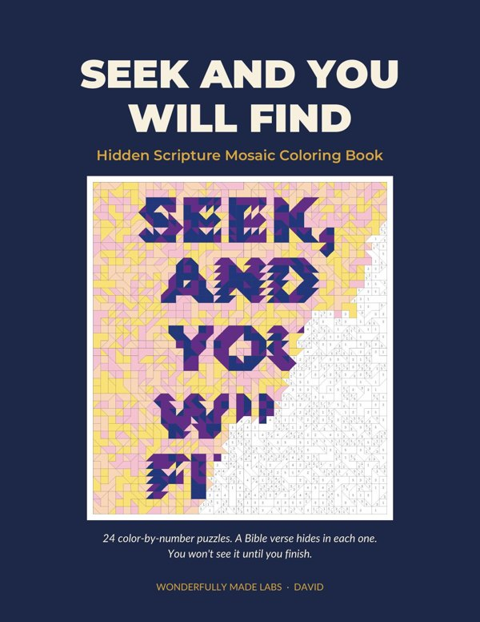

How it works
- Pick a color from the bar at the bottom.
- Tap a piece with that number to fill it. Pinch or use + and − to zoom in and see the numbers.
- Take your time. Your progress saves on this device, so you can come back any day.
Let the slow, steady work become quiet time with the Lord.
Choose a puzzle

The full book
24 hidden verses to color by hand
The paperback has 24 mosaics in three levels (Gentle, Deeper, and Still), single-sided pages, and an answer key with a reflection prompt for each verse.
See it in the shop